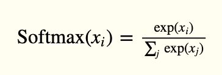
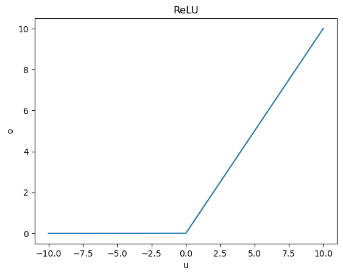
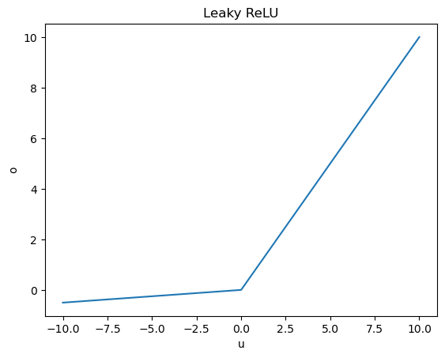

Fall 2023 CS 4641/7641 A: Machine Learning Homework 4¶
Instructor: Dr. Mahdi Roozbahani¶
Deadline: Friday, December 1, 2023 11:59 pm EST¶
No unapproved extension of the deadline is allowed. Submission past our 48-hour penalized acceptance period will lead to 0 credit.
Discussion is encouraged on Ed as part of the Q/A. However, all assignments should be done individually.
Instructions for the assignment¶
This assignment consists of both programming and theory questions.
Unless a theory question explicitly states that no work is required to be shown, you must provide an explanation, justification, or calculation for your answer.
To switch between cell for code and for markdown, see the menu -> Cell -> Cell Type
You can directly type Latex equations into markdown cells.
If a question requires a picture, you could use this syntax
<img src="" style="width: 300px;"/>to include them within your ipython notebook.Your write up must be submitted in PDF form. You may use either Latex, markdown, or any word processing software. We will NOT accept handwritten work. Make sure that your work is formatted correctly, for example submit $\sum_{i=0} x_i$ instead of \text{sum_{i=0} x_i}
When submitting the non-programming part of your assignment, you must correctly map pages of your PDF to each question/subquestion to reflect where they appear. Improperly mapped questions may not be graded correctly and/or will result in point deductions for the error.
All assignments should be done individually, and each student must write up and submit their own answers.
Graduate Students: You are required to complete any sections marked as Bonus for Undergrads
Using the autograder¶
- You will find three assignments (for grads) on Gradescope that correspond to HW4: "Assignment 4 Programming", "Assignment 4 - Non-programming" and "Assignment 4 Programming - Bonus for all". Undergrads will have an additional assignment called "Assignment 4 Programming - Bonus for Undergrads".
- You will submit your code for the autograder in the Assignment 4 Programming sections. Please refer to the Deliverables and Point Distribution section for what parts are considered required, bonus for undergrads, and bonus for all".
- We provided you different .py files and we added libraries in those files please DO NOT remove those lines and add your code after those lines. Note that these are the only allowed libraries that you can use for the homework
- You are allowed to make as many submissions until the deadline as you like. Additionally, note that the autograder tests each function separately, therefore it can serve as a useful tool to help you debug your code if you are not sure of what part of your implementation might have an issue
- For the "Assignment 4 - Non-programming" part, you will need to submit to Gradescope a PDF copy of your Jupyter Notebook with the cells ran. See this EdStem Post for multiple ways on to convert your .ipynb into a .pdf file. Please refer to the Deliverables and Point Distribution section for an outline of the non-programming questions.
- When submitting to Gradescope, please make sure to mark the page(s) corresponding to each problem/sub-problem. The pages in the PDF should be of size 8.5" x 11", otherwise there may be a deduction in points for extra long sheets.
- You MUST pass the Autograder Test to gain points for the programming section. There will not be any partial credit or manual grading for this part.
Using the local tests ¶
- For some of the programming questions we have included a local test using a small toy dataset to aid in debugging. The local test sample data and outputs are stored in localtests.py
- There are no points associated with passing or failing the local tests, you must still pass the autograder to get points.
- It is possible to fail the local test and pass the autograder since the autograder has a certain allowed error tolerance while the local test allowed error may be smaller. Likewise, passing the local tests does not guarantee passing the autograder.
- You do not need to pass both local and autograder tests to get points, passing the Gradescope autograder is sufficient for credit.
- It might be helpful to comment out the tests for functions that have not been completed yet.
- It is recommended to test the functions as it gets completed instead of completing the whole class and then testing. This may help in isolating errors. Do not solely rely on the local tests, continue to test on the autograder regularly as well.
Deliverables and Points Distribution¶
Q1: Classification with Two Layer NN [80 pts; 55pts + 25pts Undergrad Bonus]¶
Deliverables: NN.py and Notebook Graphs¶
1.1 NN Implementation [65pts; 50pts + 15pts Bonus for Undergrad] - programming
Leaky_relu [5pts]
Softmax [5pts]
Cross Entropy loss [5pts]
dropout [5pts]
forward propagation and with and without dropout [5pts + 5pts]
compute gradients and update weights [2.5pts + 2.5pts]
backward without momentum [5pt]
Gradient Descent [10pts]
Batch Gradient Descent [10pts Bonus for Undergrad]
Momentum [5pts Bonus for Undergrad]
1.2 Loss plot and CE for Gradient Descent [5pts] - non-programming
1.3 Loss plot and CE for Batch Gradient Descent [5pts Bonus for Undergrad] - non-programming
1.4 Loss plot and CE value for NN with Gradient Descent with Momentum [5pts Bonus for Undergrad] - non-programming
Q2: CNN [25pts; 20pts Bonus for Undergrad + 5pts Bonus for All]¶
Deliverables: cnn.py and Written Report¶
2.1 Image Classification using Pytorch CNN [20pts Bonus for Undergrad]
2.1.1 Loading the Model [5pts Bonus for Undergrad] - programming
2.1.3 Building the Model [5pts Bonus for Undergrad] - non-programming
2.1.4 Training the Model [8pts Bonus for Undergrad] - non-programming
2.1.5 Examining Accuracy and Loss [2pts Bonus for Undergrad] - non-programming
2.2 Exploring Deep CNN Architectures [5pts Bonus for All] - non-programming
Q3: Random Forest [45pts; 40pts + 5pts Bonus for All]¶
Deliverables: random_forest.py and Written Report¶
3.1 Random Forest Implementation [35pts] - programming
3.2 Hyperparameter Tuning with a Random Forest [5pts] - programming
3.3 Plotting Feature Importance [5pts Bonus for All] - non-programming
Q4: SVM [34pts Bonus for all]¶
Deliverables: feature.py and Written Report¶
4.1: Fitting an SVM Classifier by hand [24pts] - non programming
4.2: Feature Mapping [10pts] - programming
Environment Setup¶
import sys
import matplotlib
import numpy as np
import matplotlib.pyplot as plt
from sklearn.datasets import load_diabetes, fetch_california_housing
from sklearn.preprocessing import MinMaxScaler
from sklearn.model_selection import train_test_split
from sklearn.metrics import classification_report
from sklearn.metrics import mean_squared_error
from collections import Counter
from scipy import stats
from math import log2, sqrt
import pandas as pd
import time
from sklearn.model_selection import train_test_split
from sklearn.preprocessing import LabelEncoder
from sklearn.tree import DecisionTreeClassifier
from sklearn.datasets import make_moons
from sklearn.metrics import accuracy_score
from sklearn import svm
from NN import NeuralNet
from utilities.utils import get_housing_dataset
print('Version information')
print('python: {}'.format(sys.version))
print('matplotlib: {}'.format(matplotlib.__version__))
print('numpy: {}'.format(np.__version__))
%load_ext autoreload
%autoreload 2
%reload_ext autoreload
Version information python: 3.10.13 | packaged by Anaconda, Inc. | (main, Sep 11 2023, 13:24:38) [MSC v.1916 64 bit (AMD64)] matplotlib: 3.8.0 numpy: 1.26.0
1: Two Layer Neural Network [80 pts; 55pts + 25pts Undergrad Bonus] [P][W]¶
1.1 NN Implementation [65pts; 50pts + 15pts Bonus for Undergrad] [P]¶
In this section, you will implement a two layer fully connected neural network to perform a Classification Task. You will also experiment with different activation functions and optimization techniques. We provide two activation functions here - Leaky Relu and Softmax. You will implement a neural network where the first hidden layer has a Leaky Relu activation and the second hidden layer leads to a Softmax.
You'll also implement Gradient Descent (GD) and Batch Gradient Descent (BGD) algorithms for training these neural nets. GD is mandatory for all. BGD is bonus for undergraduate students but mandatory for graduate students.
In the NN.py file, complete the following functions:
- leaky_relu
- softmax
- cross_entropy_loss
- _dropout
- forward
- compute_gradients
- update_weights
- backward: Note Hint 2, if you still have issues passing the autograder make sure to address Hint 1 as well.
- gradient_descent
- batch_gradient_descent: Mandatory for graduate students, bonus for undergraduate students. Please batch your data in a wraparound manner. For example, given a dataset of 9 numbers, [1, 2, 3, 4, 5, 6, 7, 8, 9], and a batch size of 6, the first iteration batch will be [1, 2, 3, 4, 5, 6], the second iteration batch will be [7, 8, 9, 1, 2, 3], the third iteration batch will be [4, 5, 6, 7, 8, 9], etc...
We'll train this neural net on sklearn's California Housing dataset.
Sigmoid¶
The sigmoid function is a non-linear function with an S-shaped curve and is regarded as a foundational activation function. Its output is in the range $(0, 1)$, making it the function to use for binary classification output. The function is expressed as $$o = \phi(u)=\frac{1}{1+e^{-u}}$$
The derivation of the sigmoid function is given by $$o' = \phi'(u) = \frac{1}{1+e^{-u}} \left(1-\frac{1}{1+e^{-u}}\right) = o(1-o)$$
Note: We do not use sigmoid in this homework; it is only included for the sake of completeness.

Softmax¶
Softmax is a common activation function used in neural networks, especially for multiclass classification problems like the one we are tackling. It is used to convert a vector of raw outputs from the last layer of the Neural Network into a probability distribution over multiple classes. The softmax function takes as input a vector of real numbers and transforms them into a probability distribution, ensuring that the probabilities sum to 1.
Mathematically, given an input vector of [x1, x2, ..., xn], the softmax function calculates the probability p(y=i) for each class i as follows:
p(y=i) = $e^{xi} / (e^{x1} + e^{x2} + ... + e^{xn})$

As discussed in class, the equation that we will use in this Neural network accounts for both the x values and the weights:

TODO: Implement the function softmax in NN.py.
from utilities.localtests import TestNN
TestNN("test_softmax").test_softmax()
test_softmax passed!
ReLU and Leaky ReLU¶
The rectified linear unit (ReLU) is the most commonly used activation function in deep learning today. It takes the form $$o = \phi(u) = \max(0,u).$$ Note that ReLU can be computed very quickly due to its simplicity. The derivative of ReLU is given by $$o' = \phi'(u) = \begin{cases} 0& u \leq 0 \\ 1& u > 0 \end{cases}.$$

Unfortunately, ReLU loses information for negative inputs; it always returns zero. For this reason, some researchers use a variant called leaky ReLU. Unlike ReLU, its leaky counterpart has a small slope (such as $\alpha = 0.05$) for negative inputs instead of a flat slope.
It takes the form $$o = \phi(u) = \begin{cases} \alpha u & u \leq 0 \\ u & u > 0 \end{cases} $$
In this homework, we implement Leaky ReLU.

TODO: Implement the function leaky_relu in NN.py.
from utilities.localtests import TestNN
TestNN("test_leaky_relu").test_leaky_relu()
TestNN("test_d_leaky_relu").test_d_leaky_relu()
test_leaky_relu passed! test_d_leaky_relu passed!
Perceptron¶
A single layer perceptron can be thought of as a linear hyperplane as in logistic regression followed by a non-linear activation function. $$u_{i} = \sum \limits_{j=1}^{d} \theta_{ij}x_{j}+b_{i}$$ $$o_{i} = \phi \left( \sum \limits_{j=1}^{d} \theta_{ij}x_{j}+b_{i} \right) = \phi(\theta_{i}^{T}x+b_{i})$$ where $x$ is a d-dimensional vector i.e. $x \in R^{d}$. It is one datapoint with $d$ features. $\theta_{i} \in R^{d}$ is the weight vector for the $i^{th}$ hidden unit, $b_{i} \in R$ is the bias element for the $i^{th}$ hidden unit and $\phi(.)$ is a non-linear activation function that has been described below. $u_{i}$ is a linear combination of the features in $x_j$ weighted by $\theta_{i}$ whereas $o_{i}$ is the $i^{th}$ output unit from the activation layer.
Fully connected Layer¶
Typically, a modern neural network contains millions of perceptrons as the one shown in the previous image. Perceptrons interact in different configurations such as cascaded or parallel. In this part, we describe a fully connected layer configuration in a neural network which comprises multiple parallel perceptrons forming one layer.
We extend the previous notation to describe a fully connected layer. Each layer in a fully connected network has a number of input/hidden/output units cascaded in parallel. Let us a define a single layer of the neural net as follows:
$m$ denotes the number of hidden units in a single layer $l$ whereas $n$ denotes the number of units in the previous layer $l-1$.
$$u^{[l]}=\theta^{[l]}o^{[l-1]}+b^{[l]}$$
where $u^{[l]} \in R^{m}$ is a m-dimensional vector pertaining to the hidden units of the $l^{th}$ layer of the neural network after applying linear operations. Similarly, $o^{[l-1]} \in R^{n}$ is the n-dimensional output vector corresponding to the hidden units of the $(l-1)^{th}$ activation layer. $\theta^{[l]} \in R^{m \times n}$ is the weight matrix of the $l^{th}$ layer where each row of $\theta^{[l]}$ is analogous to $\theta_{i}$ described in the previous section i.e. each row corresponds to one hidden unit of the $l^{th}$ layer. $b^{[l]} \in R^{m}$ is the bias vector of the layer where each element of b pertains to one hidden unit of the $l^{th}$ layer. This is followed by element wise non-linear activation function $o^{[l]} = \phi(u^{[l]})$.
The whole operation can be summarized as,
$$o^{[l]} = \phi(\theta^{[l]}o^{[l-1]}+b^{[l]}) $$
where $o^{[l-1]}$ is the output of the previous layer.
Dropout¶
A dropout layer is a regularization technique used in neural networks to reduce overfitting. During training, a dropout layer looks at each input unit and randomly decide if it will be dropped (set to zero) with some given probability $p$. The decision for each unit is made independently. Formally, given an input of shape $N \times K$ (where $N$ is the number of data points and $K$ is the number of features), it samples from $\text{Bernoulli}(p)$ for each unit, resulting in an output where approximately $pNK$ of the units are zero (in expectation). This forces the network to learn more robust and generalizable features, since it cannot rely too much on any particular input. During inference, the dropout layer is turned off, and the full network is used to make predictions.
The dropout probability $p$ is a hyperparameter than can be tuned to adjust the strength of regularization. Setting $p=0$ is equivalent to no dropout.
Note that the derivative of $\text{dropout}(u)$ with respect to $u$ has the same shape as $u$. The values of the derivative depend on the random mask.
Use this as a reference for your implementation.
Note that after applying the mask, we must scale the result by a factor of $1/(1-p)$. Why is this necessary?
TODO: Implement the _dropout function in NN.py.
from utilities.localtests import TestNN
TestNN("test_dropout").test_dropout()
test_dropout passed!
Cross Entropy Loss¶
Cross-Entropy Loss is a widely used loss function in machine learning and deep learning, especially for classification tasks. It measures the dissimilarity between the predicted probability distribution and the true probability distribution of a classification problem. If it is closer to zero, the better the learnt function is.
Implementation details¶
For classification problems as in this exercise, we compute the loss as follows:
\begin{align*} CE = -\frac{1}{N}\sum\limits_{i=1}^{N}\left(y_{i} \cdot log(\hat{y_{i}})\right) \end{align*}where $y_{i}$ is the true label and $\hat{y_{i}}$ is the estimated label.
TODO: Implement the cross_entropy_loss function in NN.py.
from utilities.localtests import TestNN
TestNN("test_loss").test_loss()
test_loss passed!
Neural Network Architecture¶
The architecture of our neural network.

The above diagram shows the dimensions of the neural network you will implement, along with the relationships between the quantities. Note that the neural network consists of two linear layers, with a leaky ReLU activation in between. The logits outputted by the second linear layer are passed through the softmax function, which turns them into probability distributions over the 3 classes.
Initialization¶
We start by initializing the weights of the fully connected layer using Xavier initialization. (At a high level, we are using a uniform distribution for weight initialization). This is already implemented for you.
Forward Propagation¶
During training, we pass all data points through the network, layer by layer, using forward propagation. The equations for forward propagation are as follows: \begin{align*} u^{[0]} &= x\\ u^{[1]}&= \theta^{[1]}u^{[0]}+b^{[1]} \\ o^{[1]}&= \text{Dropout}(\text{LeakyRelu}(u^{[1]})) \\ u^{[2]}&= \theta^{[2]}o^{[1]}+b^{[2]} \\ \hat{y}=o^{[2]}&= \text{Softmax}(u^{[2]}). \end{align*}
We then use the output of the network to compute the loss \begin{align*} CE = -\frac{1}{N}\sum\limits_{i=1}^{N}\left(y_{i} \cdot log(\hat{y_{i}})\right) \end{align*}
TODO: Implement the forward function in NN.py.
from utilities.localtests import TestNN
TestNN("test_forward_without_dropout").test_forward_without_dropout()
TestNN("test_forward").test_forward()
test_forward_without_dropout passed! test_forward passed!
Backward Propagation: Update Weights and Compute Gradients¶
After the forward pass, we do back propagation to update the weights and biases in the direction of the negative gradient of the loss function.
Update Weights¶
So, we update the weights and biases using the following formulas \begin{align*} \theta^{[2]} := \theta^{[2]} - lr \times \frac{\partial l}{\partial \theta^{[2]}} \\ b^{[2]} := b^{[2]} - lr \times \frac{\partial l}{\partial b^{[2]}} \\ \theta^{[1]} := \theta^{[1]} - lr \times \frac{\partial l}{\partial \theta^{[1]}} \\ b^{[1]} := b^{[1]} - lr \times \frac{\partial l}{\partial b^{[1]}} \end{align*} where $lr$ is the learning rate. It decides the step size we want to take in the direction of the negative gradient.
TODO: Implement the update_weights function in NN.py with use_momentum=False.
from utilities.localtests import TestNN
TestNN("test_update_weights").test_update_weights()
test_update_weights passed!
Update Weights with Momentum [Bonus for Undergrad]¶
Gradient descent does a generally good job of facilitating the convergence of the model's parameters to minimize the loss function. However, the process of doing so can be slow and/or noisy. Momentum is a technique used to stabilize this convergence.
As a reminder, vanilla gradient descent applies the following update function to the parameters: $$ \begin{equation} \theta_{t+1} = \theta_t - \alpha \nabla f(\theta_t) \end{equation} $$ where $\theta_t$ represents the parameters at time $t$, $\alpha$ represents the learning rate, and $f$ is the loss function.
Momentum proposes the following tweak to our parameter update function: $$ \begin{align*} z_{t+1} &= \beta z_t + \nabla f(\theta_t) \\ \theta_{t+1} &= \theta_t - \alpha z_{t+1} \end{align*} $$ where $\beta \in [0, 1]$ is the momentum constant and $z_t$ represents the momentum records at time $t$.
You can think of momentum as taking our previous changes into consideration. If we've been moving in a certain direction recently, it's likely we should keep moving in that direction. The recurrence relation given shows that we use an exponentially-weighted average of the previous updates for our current update.
A useful analogy about momentum from this great article on Distill:
Here’s a popular story about momentum: gradient descent is a man walking down a hill. He follows the steepest path downwards; his progress is slow, but steady. Momentum is a heavy ball rolling down the same hill. The added inertia acts both as a smoother and an accelerator, dampening oscillations and causing us to barrel through narrow valleys, small humps and local minima.
TODO: Implement the update_weights function in NN.py with use_momentum=True.
HINT: $z$ is stored in self.change
from utilities.localtests import TestNN
TestNN("test_update_weights_with_momentum").test_update_weights_with_momentum()
--------------------------------------------------------------------------- AssertionError Traceback (most recent call last) c:\Users\shres\Documents\Classes\CS 4641\HW4\hw4_code\FALL2023_HW4_Student.ipynb Cell 28 line 3 <a href='vscode-notebook-cell:/c%3A/Users/shres/Documents/Classes/CS%204641/HW4/hw4_code/FALL2023_HW4_Student.ipynb#X36sZmlsZQ%3D%3D?line=0'>1</a> from utilities.localtests import TestNN ----> <a href='vscode-notebook-cell:/c%3A/Users/shres/Documents/Classes/CS%204641/HW4/hw4_code/FALL2023_HW4_Student.ipynb#X36sZmlsZQ%3D%3D?line=2'>3</a> TestNN("test_update_weights_with_momentum").test_update_weights_with_momentum() File c:\Users\shres\Documents\Classes\CS 4641\HW4\hw4_code\utilities\localtests.py:729, in TestNN.test_update_weights_with_momentum(self) 726 b2 = np.array([[0.0029572]]).T 727 truth = {"theta1": theta1, "b1": b1, "theta2": theta2, "b2": b2} --> 729 self.assertDictAllClose(student, truth) 730 print_success_message("test_update_weights_with_momentum") File c:\Users\shres\Documents\Classes\CS 4641\HW4\hw4_code\utilities\localtests.py:122, in TestNN.assertDictAllClose(self, student, truth) 120 if key not in student: 121 self.fail("Key " + key + " missing.") --> 122 self.assertAllClose(student[key], truth[key], msg=(key + " is incorrect.")) 124 for key in student: 125 if key not in truth: File c:\Users\shres\Documents\Classes\CS 4641\HW4\hw4_code\utilities\localtests.py:116, in TestNN.assertAllClose(self, student, truth, msg) 115 def assertAllClose(self, student, truth, msg=None): --> 116 self.assertTrue(np.allclose(student, truth), msg=msg) File c:\Users\shres\.conda\envs\ml_hw4\lib\unittest\case.py:687, in TestCase.assertTrue(self, expr, msg) 685 if not expr: 686 msg = self._formatMessage(msg, "%s is not true" % safe_repr(expr)) --> 687 raise self.failureException(msg) AssertionError: False is not true : theta1 is incorrect.
Compute Gradients¶
In order to compute the gradients of the loss with respect to each parameter, we use the equations that make up the forward pass: \begin{align*} u_1 &= \theta_1 X + b_1 \\ o_1 &= \text{leaky\_relu}(u_1) \\ u_2 &= \theta_2 o_1 + b_2 \\ o_2 &= \text{softmax}(u_2) \\ l &= \text{cross\_entropy}(o_2) \end{align*}
When computing gradients, we travel backwards from the loss all the way back ot the input. We first seek to obtain the derivative of the loss $l$ with respect to the logits $u_2$. Note that they have the relation: $$ l = \text{cross\_entropy}(\text{softmax}(u_2))$$ Computing the derivative of this seems very involved, but it actually has a very elegant result: $$ \frac{\partial l}{\partial u_2} = \text{softmax}(u_2) - y = \hat{y} - y. $$ While this is given to you, we encourage you to derive it for yourself! You can find a great explanation of the derivation in this article.
Now that we have $\frac{\partial l}{\partial u_2}$, we seek to move further back and compute $\frac{\partial l}{\partial \theta_2}$ and $\frac{\partial l}{\partial b_2}$. This is done using the chain rule: \begin{align*} \frac{\partial l}{\partial \theta_2} &= \frac{\partial l}{\partial u_2} \cdot \frac{\partial u_2}{\partial \theta_2} \\ \frac{\partial l}{\partial b_2} &= \frac{\partial l}{\partial u_2} \cdot \frac{\partial u_2}{\partial b_2}. \end{align*}
The quantities $\frac{\partial u_2}{\partial \theta_2}$ and $\frac{\partial u_2}{\partial b_2}$ are easy to derive from the relation $u_2 = \theta_2 o_1 + b_2$. We see that \begin{align*} \frac{\partial l}{\partial \theta_2} &= \frac{\partial l}{\partial u_2} \cdot o_1 \\ \frac{\partial l}{\partial b_2} &= \frac{\partial l}{\partial u_2} \cdot 1. \end{align*}
Note that the derivative involves $o_1$, which we computed during the forward pass. Fortunately, we saved that value in self.cache, so we don't need to compute it again!
The same procedure is repeated to obtain the gradients for the upstream parameters $\theta_1$ and $b_1$. We must first perform the intermediate steps of computing the derivative of the loss with respect to $o_1$ and then $u_1$. These are given by \begin{align*} \frac{\partial l}{\partial o_1} &= \frac{\partial l}{\partial u_2} \cdot \theta_2 \\ \frac{\partial l}{\partial u_1} &= \frac{\partial l}{\partial o_1} \cdot \frac{\partial\,\text{leaky\_relu}}{\partial u_1}. \end{align*}
In the second relation, we must consider our use of dropout! If we applied dropout on a particular neuron, it should not be adjusted. To account for this, in the case of use_dropout=True, we must instead use $$ \frac{\partial l}{\partial u_1} = \frac{\partial l}{\partial o_1} \cdot \frac{\partial\,\text{leaky\_relu}}{\partial u_1} \cdot \text{dropout\_mask} \cdot \frac{1}{1-p}, $$ where $1 / (1-p)$ is the scaling factor and dropout_mask is stored in self.cache.
The final step! We can use these values to compute the gradients for $\theta_1$ and $b_1$, using the relation $u_1 = \theta_1 X + b_1$, which are given by \begin{align*} \frac{\partial l}{\partial \theta_1} &= \frac{\partial l}{\partial u_1} \cdot X \\ \frac{\partial l}{\partial b_1} &= \frac{\partial l}{\partial u_1} \cdot 1. \end{align*}
Implementation Tips¶
The above equations are given in matrix notation. When implementing these computations in code, the easiest way to make sure you are calculating the values correctly and in the right order is to check shapes. Any time you are doing a matrix/vector operation in NumPy, check the shapes.
Since we are computing these gradients over $N$ data points, we must divide the gradients by $N$ to take the average gradient. Make sure you are dividing by $N$ exactly once, no more and no less!
TODO: Implement the compute_gradients function in NN.py.
from utilities.localtests import TestNN
TestNN(
"test_compute_gradients_without_dropout"
).test_compute_gradients_without_dropout()
TestNN("test_compute_gradients").test_compute_gradients()
test_compute_gradients_without_dropout passed! test_compute_gradients passed!
Now that we know how to compute relevant gradients and how to update the weights of our network, we can perform the entire backwards step.
TODO: Implement the backward function in NN.py.
1.1.1 Local Test: Gradient Descent¶
You may test your implementation of the GD function contained in NN.py in the cell below. See Using the Local Tests for more details. Look at the function documentation in gradient_descent for guidance.
###############################
### DO NOT CHANGE THIS CELL ###
###############################
from utilities.localtests import TestNN
TestNN("test_gradient_descent").test_gradient_descent()
Loss after iteration 0: 1.182135 Loss after iteration 1: 1.180133 Loss after iteration 2: 1.178184 Your GD losses works within the expected range: True
1.1.2 Local Test: Batch Gradient Descent [No Points]¶
You may test your implementation of the BGD function contained in NN.py in the cell below. See Using the Local Tests for more details. Look at the function documentation in gradient_descent for guidance.
###############################
### DO NOT CHANGE THIS CELL ###
###############################
from utilities.localtests import TestNN
TestNN("test_batch_gradient_descent").test_batch_gradient_descent()
--------------------------------------------------------------------------- NotImplementedError Traceback (most recent call last) c:\Users\shres\Documents\Classes\CS 4641\HW4\hw4_code\FALL2023_HW4_Student.ipynb Cell 37 line 7 <a href='vscode-notebook-cell:/c%3A/Users/shres/Documents/Classes/CS%204641/HW4/hw4_code/FALL2023_HW4_Student.ipynb#X51sZmlsZQ%3D%3D?line=0'>1</a> ############################### <a href='vscode-notebook-cell:/c%3A/Users/shres/Documents/Classes/CS%204641/HW4/hw4_code/FALL2023_HW4_Student.ipynb#X51sZmlsZQ%3D%3D?line=1'>2</a> ### DO NOT CHANGE THIS CELL ### <a href='vscode-notebook-cell:/c%3A/Users/shres/Documents/Classes/CS%204641/HW4/hw4_code/FALL2023_HW4_Student.ipynb#X51sZmlsZQ%3D%3D?line=2'>3</a> ############################### <a href='vscode-notebook-cell:/c%3A/Users/shres/Documents/Classes/CS%204641/HW4/hw4_code/FALL2023_HW4_Student.ipynb#X51sZmlsZQ%3D%3D?line=4'>5</a> from utilities.localtests import TestNN ----> <a href='vscode-notebook-cell:/c%3A/Users/shres/Documents/Classes/CS%204641/HW4/hw4_code/FALL2023_HW4_Student.ipynb#X51sZmlsZQ%3D%3D?line=6'>7</a> TestNN("test_batch_gradient_descent").test_batch_gradient_descent() File c:\Users\shres\Documents\Classes\CS 4641\HW4\hw4_code\utilities\localtests.py:813, in TestNN.test_batch_gradient_descent(self) 753 batch_y = np.array( 754 [ 755 0, (...) 809 ] 810 ) 811 batch_y = batch_y.reshape((3, 6, 3)) --> 813 nn.batch_gradient_descent( 814 x_train, y_train, iter=3, local_test=True, use_momentum=False 815 ) 816 batch_str = "batch_y at iteration %i: " 817 print("\ny_train input:", y_train) File c:\Users\shres\Documents\Classes\CS 4641\HW4\hw4_code\NN.py:374, in NeuralNet.batch_gradient_descent(self, x, y, use_momentum, iter, local_test) 340 def batch_gradient_descent(self, x, y, use_momentum, iter=60000, local_test=True): 341 """ 342 This function is an implementation of the batch gradient descent algorithm 343 (...) 372 appending/printing out loss and y batch arrays 373 """ --> 374 raise NotImplementedError 376 self.init_parameters() 378 for i in range(iter): 379 # TODO: implement training loop 380 381 # Print every one iteration for local test, and every 1000th iteration for AG and 1.3 NotImplementedError:
1.1.3 Local Test: Gradient Descent with Momentum¶
You may test your implementation of the GD function with momentum contained in NN.py in the cell below. See Using the Local Tests for more details. Revisit your implementation for update_weights.
###############################
### DO NOT CHANGE THIS CELL ###
###############################
from utilities.localtests import TestNN
TestNN("test_gradient_descent_with_momentum").test_gradient_descent_with_momentum()
Loss after iteration 0: 1.182135 Loss after iteration 1: 1.180133 Loss after iteration 2: 1.178184 Your GD losses works within the expected range: True
1.2 Loss plot and CE value for NN with Gradient Descent [5pts] [W]¶
Train your neural net implementation with gradient descent and print out the loss at every 1000th iteration (starting at iteration 0). The following cells will plot the loss vs epoch graph and calculate the final test CE.
###############################
### DO NOT CHANGE THIS CELL ###
###############################
from NN import NeuralNet
from sklearn.metrics import confusion_matrix, ConfusionMatrixDisplay
x_train, y_train, x_test, y_test = get_housing_dataset()
nn = NeuralNet(
y_train, lr=0.01, use_dropout=False, use_momentum=False
) # initalize neural net class
nn.gradient_descent(x_train, y_train, iter=60000) # train
Loss after iteration 0: 1.182135 Loss after iteration 1000: 1.015625 Loss after iteration 2000: 0.907331 Loss after iteration 3000: 0.810578 Loss after iteration 4000: 0.743130 Loss after iteration 5000: 0.700288 Loss after iteration 6000: 0.672318 Loss after iteration 7000: 0.652622 Loss after iteration 8000: 0.637642 Loss after iteration 9000: 0.625433 Loss after iteration 10000: 0.615512 Loss after iteration 11000: 0.607080 Loss after iteration 12000: 0.599724 Loss after iteration 13000: 0.592748 Loss after iteration 14000: 0.585970 Loss after iteration 15000: 0.580368 Loss after iteration 16000: 0.575355 Loss after iteration 17000: 0.570741 Loss after iteration 18000: 0.566576 Loss after iteration 19000: 0.562774 Loss after iteration 20000: 0.559176 Loss after iteration 21000: 0.555775 Loss after iteration 22000: 0.552741 Loss after iteration 23000: 0.549943 Loss after iteration 24000: 0.547375 Loss after iteration 25000: 0.544994 Loss after iteration 26000: 0.542804 Loss after iteration 27000: 0.540702 Loss after iteration 28000: 0.538717 Loss after iteration 29000: 0.536936 Loss after iteration 30000: 0.535189 Loss after iteration 31000: 0.533597 Loss after iteration 32000: 0.532165 Loss after iteration 33000: 0.530835 Loss after iteration 34000: 0.529583 Loss after iteration 35000: 0.528410 Loss after iteration 36000: 0.527319 Loss after iteration 37000: 0.526291 Loss after iteration 38000: 0.525316 Loss after iteration 39000: 0.524387 Loss after iteration 40000: 0.523500 Loss after iteration 41000: 0.522654 Loss after iteration 42000: 0.521846 Loss after iteration 43000: 0.521068 Loss after iteration 44000: 0.520315 Loss after iteration 45000: 0.519584 Loss after iteration 46000: 0.518875 Loss after iteration 47000: 0.518183 Loss after iteration 48000: 0.517510 Loss after iteration 49000: 0.516851 Loss after iteration 50000: 0.516207 Loss after iteration 51000: 0.515575 Loss after iteration 52000: 0.514955 Loss after iteration 53000: 0.514341 Loss after iteration 54000: 0.513739 Loss after iteration 55000: 0.513149 Loss after iteration 56000: 0.512568 Loss after iteration 57000: 0.511994 Loss after iteration 58000: 0.511429 Loss after iteration 59000: 0.510869
# Plot confusion matrix
y_true = np.argmax(y_test, axis=1)
y_pred = nn.predict(x_test)
display_labels = ["low", "med", "high"]
ConfusionMatrixDisplay.from_predictions(
y_true, y_pred, normalize="true", display_labels=display_labels
)
plt.show()
![No description has been provided for this image]()
# Plot training loss
fig = plt.plot(np.array(nn.loss).squeeze())
plt.title(f"Training: {nn.neural_net_type}")
plt.xlabel("Epoch (1000)")
plt.ylabel("Loss")
plt.show()
![No description has been provided for this image]()
# Total loss
y_hat = nn.forward(x_test, use_dropout=False)
print("Cross entropy loss:", round(nn.cross_entropy_loss(y_test, y_hat), 3))
Cross entropy loss: 0.752
1.3 Loss plot and CE value for NN with BGD [5pts Bonus for Undergrad] [W]¶
Train your neural net implementation with batch gradient descent and print out the loss at every 1000th iteration (starting at iteration 0). The following cells will plot the loss vs epoch graph and calculate the final test CE.
###############################
### DO NOT CHANGE THIS CELL ###
###############################
from NN import NeuralNet
from sklearn.metrics import confusion_matrix, ConfusionMatrixDisplay
x_train, y_train, x_test, y_test = get_housing_dataset()
nn = NeuralNet(
y_train, lr=0.01, use_dropout=True, use_momentum=False
) # initalize neural net class
nn.batch_gradient_descent(x_train, y_train, iter=60000, use_momentum=False)
# Plot training loss
fig = plt.plot(np.array(nn.loss).squeeze())
plt.title(f"Training: {nn.neural_net_type}")
plt.xlabel("Epoch (1000)")
plt.ylabel("Loss")
plt.show()
# Plot confusion matrix
y_true = np.argmax(y_test, axis=1)
y_pred = nn.predict(x_test)
display_labels = ["low", "med", "high"]
ConfusionMatrixDisplay.from_predictions(
y_true, y_pred, normalize="true", display_labels=display_labels
)
plt.show()
# Total loss
y_hat = nn.forward(x_test, use_dropout=False)
print("Cross entropy loss:", round(nn.cross_entropy_loss(y_test, y_hat), 3))
1.4 Loss plot and CE value for NN with Gradient Descent with Momentum [5pts Bonus for Undergrad] [W]¶
Train your neural net implementation with gradient descent with momentum and print out the loss at every 1000th iteration (starting at iteration 0). The following cells will plot the loss vs epoch graph and calculate the final test CE.
###############################
### DO NOT CHANGE THIS CELL ###
###############################
from NN import NeuralNet
from sklearn.metrics import confusion_matrix, ConfusionMatrixDisplay
x_train, y_train, x_test, y_test = get_housing_dataset()
nn = NeuralNet(
y_train, lr=.01, use_dropout=False, use_momentum=True
) # initalize neural net class
nn.gradient_descent(x_train, y_train, iter=60000, use_momentum=True) # train
# Plot training loss
fig = plt.plot(np.array(nn.loss).squeeze())
plt.title(f"Training: {nn.neural_net_type}")
plt.xlabel("Epoch (1000)")
plt.ylabel("Loss")
plt.show()
# Plot confusion matrix
y_true = np.argmax(y_test, axis=1)
y_pred = nn.predict(x_test)
display_labels = ["low", "med", "high"]
ConfusionMatrixDisplay.from_predictions(
y_true, y_pred, normalize="true", display_labels=display_labels
)
plt.show()
# Total loss
y_hat = nn.forward(x_test, use_dropout=False)
print("Cross entropy loss:", round(nn.cross_entropy_loss(y_test, y_hat), 3))
2: Image Classification based on Convolutional Neural Networks [25pts; 20pts Bonus for Undergrad + 5pts Bonus for all] [P][W]¶
2.1 Image Classification using Pytorch and CNN¶
- Pytorch is a popular platform for machine learning.
Pytorch Description
PyTorch is a Machine Learning/Deep Learning tensor library based on Python and Torch. It uses dynamic computation graphs and is completely Pythonic. Pytorch is used for applications using GPUs and CPUs.
Helpful Links
Setup Pytorch
Make sure you installed pytorch and torchvision (directions here).
Please also see Pytorch Quickstart Tutorial to see how to load a data set, build a training loop, and test the model. Another good resource for building CNNs using Pytorch is here.
Environment Setup¶
from torch.utils.data import non_deterministic
import torchvision
import torch
from torchvision.transforms import v2
%load_ext autoreload
%autoreload 2
%reload_ext autoreload
The autoreload extension is already loaded. To reload it, use: %reload_ext autoreload
2.1.1 Load CIFAR-10 Dataset and Data Augmentation [5pts - Bonus for Undergrad][P]¶
We use CIFAR-10 dataset to train our model. This is a dataset of 60,000 32x32 colour images in 10 classes, with 6,000 images per class. There are 50,000 training images and 10,000 test images. We provide code for you to download CIFAR-10 dataset below.
Data Augmentation [5pts]¶
Data augmentation is a technique to increase the diversity of your training set by applying random (but realistic) transformations such as image rotation and flipping the image around an axis. If the dataset in a machine learning model is rich and sufficient, the model performs better and more accurately. We will preprocess the training and testing set, but only the training set will undergo augmentation.
Go through the Pytorch torchvision.transforms.v2 documentation to see how to apply multiple transformations at once.
In the cnn_image_transformations.py file, complete the following functions to understand the common practices used for preprocessing and augmenting the image data:
create_training_transformations
In this function, you are going to preprocess and augment training data.
PREPROCESS: Convert the given PIL Images to Tensors
AUGMENTATION: Apply Random Horizontal Flip and Random Rotation
create_testing_transformations
In this function, you are going to only preprocess testing data.
- PREPROCESS: Convert the given PIL Images to Tensors
Please note that the Gradescope only checks if expected preprocessing layers are existent.
References
v2.ToTensor() (Hint: Look at the warning)
###############################
### DO NOT CHANGE THIS CELL ###
###############################
from cnn_image_transformations import create_training_transformations
from cnn_image_transformations import create_testing_transformations
# Create Transformations
training_transformations = create_training_transformations()
testing_transformation = create_testing_transformations()
# Load data
trainset = torchvision.datasets.CIFAR10(
root="./data", train=True, download=True, transform=training_transformations
)
testset = torchvision.datasets.CIFAR10(
root="./data", train=False, download=True, transform=testing_transformation
)
classes = (
"plane",
"car",
"bird",
"cat",
"deer",
"dog",
"frog",
"horse",
"ship",
"truck",
)
print(trainset.data.shape)
print(testset.data.shape)
2.1.2 Load some sample images from CIFAR-10 [Setup - No points]¶
###############################
### DO NOT CHANGE THIS CELL ###
###############################
import matplotlib.pyplot as plt
import numpy as np
trainloader = torch.utils.data.DataLoader(
trainset, batch_size=32, shuffle=True, num_workers=2
)
testloader = torch.utils.data.DataLoader(
testset, batch_size=32, shuffle=False, num_workers=2
)
# functions to show an image
def imshow(img):
img = img / 2 + 0.5 # unnormalize
npimg = img.numpy()
plt.imshow(np.transpose(npimg, (1, 2, 0)))
plt.show()
# get some random training images
dataiter = iter(trainloader)
images, labels = next(dataiter)
print("Image size")
print(v2.functional.get_size(images[0]))
# show images
imshow(torchvision.utils.make_grid(images))
--------------------------------------------------------------------------- NameError Traceback (most recent call last) c:\Users\shres\Documents\Classes\CS 4641\HW4\hw4_code\FALL2023_HW4_Student.ipynb Cell 65 line 9 <a href='vscode-notebook-cell:/c%3A/Users/shres/Documents/Classes/CS%204641/HW4/hw4_code/FALL2023_HW4_Student.ipynb#Y121sZmlsZQ%3D%3D?line=4'>5</a> import matplotlib.pyplot as plt <a href='vscode-notebook-cell:/c%3A/Users/shres/Documents/Classes/CS%204641/HW4/hw4_code/FALL2023_HW4_Student.ipynb#Y121sZmlsZQ%3D%3D?line=5'>6</a> import numpy as np <a href='vscode-notebook-cell:/c%3A/Users/shres/Documents/Classes/CS%204641/HW4/hw4_code/FALL2023_HW4_Student.ipynb#Y121sZmlsZQ%3D%3D?line=7'>8</a> trainloader = torch.utils.data.DataLoader( ----> <a href='vscode-notebook-cell:/c%3A/Users/shres/Documents/Classes/CS%204641/HW4/hw4_code/FALL2023_HW4_Student.ipynb#Y121sZmlsZQ%3D%3D?line=8'>9</a> trainset, batch_size=32, shuffle=True, num_workers=2 <a href='vscode-notebook-cell:/c%3A/Users/shres/Documents/Classes/CS%204641/HW4/hw4_code/FALL2023_HW4_Student.ipynb#Y121sZmlsZQ%3D%3D?line=9'>10</a> ) <a href='vscode-notebook-cell:/c%3A/Users/shres/Documents/Classes/CS%204641/HW4/hw4_code/FALL2023_HW4_Student.ipynb#Y121sZmlsZQ%3D%3D?line=10'>11</a> testloader = torch.utils.data.DataLoader( <a href='vscode-notebook-cell:/c%3A/Users/shres/Documents/Classes/CS%204641/HW4/hw4_code/FALL2023_HW4_Student.ipynb#Y121sZmlsZQ%3D%3D?line=11'>12</a> testset, batch_size=32, shuffle=False, num_workers=2 <a href='vscode-notebook-cell:/c%3A/Users/shres/Documents/Classes/CS%204641/HW4/hw4_code/FALL2023_HW4_Student.ipynb#Y121sZmlsZQ%3D%3D?line=12'>13</a> ) <a href='vscode-notebook-cell:/c%3A/Users/shres/Documents/Classes/CS%204641/HW4/hw4_code/FALL2023_HW4_Student.ipynb#Y121sZmlsZQ%3D%3D?line=14'>15</a> # functions to show an image NameError: name 'trainset' is not defined
As you can see from above, the CIFAR-10 dataset contains different types of objects. The images have been size-normalized and objects remain centered in fixed-size images.
2.1.3 Build convolutional neural network model [5pts] [W]¶
In this part, you need to build a convolutional neural network as described below. The architecture of the model is outlined.
In the cnn.py file, complete the following functions:
- __init__: See Defining Variables section
- forward: See Defining Model section
[INPUT - CONV - CONV - MAXPOOL - DROPOUT - CONV - CONV - MAXPOOL - DROPOUT - AVERAGEPOOL - FC1 - DROPOUT - FC2 - DROPOUT - FC3]
INPUT: [$32\times32\times3$] will hold the raw pixel values of the image, in this case, an image of width 32, height 32, with 3 channels.
CONV: Conv. layer will compute the output of neurons that are connected to local regions in the input, each computing a dot product between their weights and a small region they are connected to the input volume. In our example architecture, we decide to set the kernel_size to be $3\times3$. For example, the output of the Conv. layer may look like $[32\times32\times8]$ if we set out_channels to be 8 and use appropriate paddings to maintain shape.
CONV: Additional Conv. layer take outputs from above layers and applies more filters. We set the kernel_size to be $3\times3$ and out_channels to be 32.
MAXPOOL: MAXPOOL layer will perform a downsampling operation along the spatial dimensions (width, height). With pool size of $2\times2$, resulting shape takes form $16\times16$.
DROPOUT: DROPOUT layer with the dropout rate of 0.2 to prevent overfitting.
CONV: Additonal Conv. layer takes outputs from above layers and applies more filters. We set the kernel_size to be $3\times3$ and out_channels to be 32. Appropriate paddings are used to maintain shape.
CONV: Additonal Conv. layer takes outputs from above layers and applies more filters. We set the kernel_size to be $3\times3$ and out_channels to be 64. Appropriate paddings are used to maintain shape.
MAXPOOL: MAXPOOL layer will perform a downsampling operation along the spatial dimensions (width, height).
DROPOUT: Dropout layer with the dropout rate of 0.2 to prevent overfitting.
AVERAGEPOOL: AVERAGEPOOL layer will perform a downsampling operation along the spatial dimension (width, height). Checkout AdaptiveAvgPool2d below.
FC1: Dense layer which takes output from above layers, and has 256 neurons. Flatten() operations may be useful.
DROPOUT: Dropout layer with the dropout rate of 0.2 to prevent overfitting.
FC2： Dense layer which takes output from above layers, and has 128 neurons.
DROPOUT: Dropout layer with the dropout rate of 0.2 to prevent overfitting.
FC3: Dense layer with 10 neurons, and Softmax activation, is the final layer. The dimension of the output space is the number of classes.
Activation function: Use LeakyReLU with negative_slope 0.01 as the activation function for Conv. layers and Dense layers unless otherwise indicated to build you model architecture
Note that while this is a suggested model design, you are welcome to use other architectures and experiment with different layers for better results.
The following links are Pytorch documentation for the layers you are going to use to build the CNN.
Lastly, if you would like to experiment with additional layers, explore the torch.nn api.
###############################
### DO NOT CHANGE THIS CELL ###
###############################
# Show the architecture of the model
achi = plt.imread("./data/images/Architecture.png")
fig = plt.figure(figsize=(10, 10))
plt.imshow(achi)
Defining model [5pts Bonus for Undergrad][W]¶
You now need to complete the __init__() function and the forward() function in cnn.py to define your model structure.
Your model is required to have at least 2 convolutional layers and at least 2 dense layers. Ensuring that these requirements are met will earn you 5pts.
Once you have defined a model structure you may use the cell below to examine your architecture.
###############################
### DO NOT CHANGE THIS CELL ###
###############################
# You can compare your architecture with the 'Architecture.png'
from cnn import CNN
net = CNN()
print(net)
2.1.4 Train the network [8pts total (3pts, 3pts, 2pts) Bonus for Undergrad] [W]¶
Tuning: Training the network is the next thing to try. You can set the hyperparameters in the cell below. If your hyperparameters are set properly, you should see the loss of the validation set decreased and the value of accuracy increased. It may take more than 15 minutes to train your model.
Recommended Batch Sizes fall in the range 32-512 (use powers of 2)
Recommended Epoch Counts fall in the range 5-20
Recommended Learning Rates fall in the range .0001-.01
Expected Result: You should be able to achieve more than $75\%$ accuracy on the test set to get full points. If you achieve accuracy between $60\%$ to $69\%$, you will only get 3 points. An accuracy between $69\%$ to $75\%$ will earn an additional 3pts.
Note: If you would like to automate the tuning process, you can use a nested for loop to search for the hyperparameter that achieves the accuracy.
- $60\%$ to $69\%$ earns 3pts
- $69\%$ to $75\%$ earns 3pts more (6pts total)
- $75\%$+ earns 2pts more (8pts total)
Train your own CNN model¶
from cnn import CNN
from cnn_trainer import Trainer
net = CNN()
# TODO: Change hyperparameters here
num_epochs = 3
batch_size = 16
init_lr = 1e-3
# Choose best device to speed up training
device = "cuda" if torch.cuda.is_available() else "cpu"
print(f"Using {device} device")
trainer = Trainer(
net,
trainset,
testset,
num_epochs=num_epochs,
batch_size=batch_size,
init_lr=init_lr,
device=device,
)
trainer.train()
2.1.5 Examine accuracy and loss [2pts Bonus for Undergrad] [W]¶
You should expect to see gradually decreasing loss and gradually increasing accuracy. Examine loss and accuracy by running the cell below, no editing is necessary. Having appropriate looking loss and accuracy plots will earn you the last 2pts for your convolutional neural net.
###############################
### DO NOT CHANGE THIS CELL ###
###############################
# list all data in history
train_loss, train_accuracy, valid_loss, valid_accuracy = trainer.get_training_history()
# summarize history for accuracy and loss
plt.plot(train_accuracy)
plt.plot(valid_accuracy)
plt.title("model accuracy")
plt.ylabel("accuracy")
plt.xlabel("epoch")
plt.legend(["train", "valid"], loc="upper left")
plt.show()
plt.plot(train_loss)
plt.plot(valid_loss)
plt.title("model loss")
plt.ylabel("loss")
plt.xlabel("epoch")
plt.legend(["train", "valid"], loc="upper left")
plt.show()
###############################
### DO NOT CHANGE THIS CELL ###
###############################
# make predictions
y_pred, y_pred_classes, y_gt_classes = trainer.predict(testloader)
y_pred_prob = torch.max(y_pred, dim=1).values
from sklearn.metrics import confusion_matrix, accuracy_score
plt.figure(figsize=(8, 7))
plt.imshow(confusion_matrix(y_gt_classes, y_pred_classes, normalize="true"))
plt.title("Confusion matrix", fontsize=16)
plt.xticks(np.arange(10), classes, rotation=90, fontsize=12)
plt.yticks(np.arange(10), classes, fontsize=12)
plt.colorbar()
plt.show()
2.2 Exploring Deep CNN Architectures [5pts Bonus for All] [W]¶
The network you have produced is rather simple relative to many of those used in industry and research. Researchers have worked to make CNN models deeper and deeper over the past years in an effort to gain higher accuracy in predictions. While your model is only a handful of layers deep, some state of the art deep architectures may include up to 150 layers. However, this process has not been without challenges.
One such problem is the problem of the vanishing gradient. The weights of a neural network are updated using the backpropagation algorithm. The backpropagation algorithm makes a small change to each weight in such a way that the loss of the model decreases. Using the chain rule, we can find this gradient for each weight. But, as this gradient keeps flowing backwards to the initial layers, this value keeps getting multiplied by each local gradient. Hence, the gradient becomes smaller and smaller, making the updates to the initial layers very small, increasing the training time considerably.
Many tactics have been used in an effort to solve this problem. One architecture, named ResNet, solves the vanishing gradient problem in a unique way. ResNet was developed at Microsoft Research to find better ways to train deep networks. Take a moment to explore how ResNet tackles the vanishing gradient problem by reading the original research paper here: https://arxiv.org/pdf/1512.03385.pdf (also included as PDF in papers directory).
Question: In your own words, explain how ResNet addresses the vanishing gradient problem in 1-2 sentences below: (Please type answers directly in the cell below.)
Answer:
...
3: Random Forests [45pts; 40pts + 5pts Bonus for All] [P] [W]¶
NOTE: Please use sklearn's ExtraTreeClassifier in your Random Forest implementation. You can find more details about this classifier here.
For context, the general difference between an extra tree and decision tree classifier is that the decision tree optimizes which feature to reduce entropy on and at what value to split, while an extra tree randomly splits on the features given.
3.1 Random Forest Implementation [35pts] [P]¶
The decision boundaries drawn by decision or extra trees are very sharp, and fitting a tree of unbounded depth to a list of examples almost inevitably leads to overfitting. In an attempt to decrease the variance of an extra tree, we're going to use a technique called 'Bootstrap Aggregating' (often abbreviated 'bagging'). This stems from the idea that a collection of weak learners can learn decision boundaries as well as a strong learner. This is commonly called a Random Forest.
We can build a Random Forest as a collection of extra trees, as follows:
For every tree in the random forest, we're going to
a) Subsample the examples with replacement. Note that in this question, the size of the subsample data is equal to the original dataset.
b) From the subsamples in part a, choose attributes at random without replacement to learn on in accordance with a provided attribute subsampling rate. Based on what it was mentioned in the class, we randomly pick features in each split. We use a more general approach here to make the programming part easier. Let's randomly pick some features (65% percent of features) and grow the tree based on the pre-determined randomly selected features. Therefore, there is no need to find random features in each split.
c) Fit an extra tree to the subsample of data we've chosen to a certain depth.
Classification for a random forest is then done by taking a majority vote of the classifications yielded by each tree in the forest after it classifies an example.
In the random_forest.py file, complete the following functions:
- _bootstrapping: this function will be used in
bootstrapping() - fit: Fit the extra trees initialized in
__init__with the datasets created inbootstrapping(). You will need to callbootstrapping().
NOTES:
- In the Random Forest Class, X is assumed to be a matrix with num_training rows and num_features columns where num_training is the number of total records and num_features is the number of features of each record. y is assumed to be a vector of labels of length num_training.
- Look out for TODO's for the parts that need to be implemented
- If you receive any
SettingWithCopyWarningwarnings from the Pandas library, you can safely ignore them. - Hint: when bootstrapping, set replace = False while creating col_idx
3.2 Hyperparameter Tuning with a Random Forest [5pts] [P]¶
In machine learning, hyperparameters are parameters that are set before the learning process begins. The max_depth, num_estimators, or max_features variables from 3.1 are examples of different hyperparameters for a random forest model. Let's first review the dataset in a bit more detail.
Dataset Objective¶
Imagine that we are a team of researchers working to track and document various information related to dry beans for a machine learning model that predicts what type of bean is represented. We know that there are multiple things to keep track of, such as the shapes and sizes that differentiate different types of beans. We will use the information we track and document in order to publish it for the general public.
After much reflection within the research team, we come to the conclusion that we can use past observations on bean images to create a model.
We will use our random forest algorithm from Q3.1 to predict the bean type.
You can find more information on the dataset here.
The barbunya bean, also known as the cranberry bean, was first bred in Colombia.
Loading the dataset¶
The dataset that the company has collected has the following features:
There were 16 features used in this dataset.
Inputs:
- Area The area of a bean zone and the number of pixels within its boundaries
- Perimeter: Bean circumference is defined as the length of its border
- MajorAxisLength: The distance between the ends of the longest line that can be drawn from a bean
- MinorAxisLength: The longest line that can be drawn from the bean while standing perpendicular to the main axis
- AspectRatio: Defines the relationship between MajorAxisLength and MinorAxisLength
- Eccentricity: Eccentricity of the ellipse having the same moments as the region
- ConvexArea: Number of pixels in the smallest convex polygon that can contain the area of a bean seed
- EquivDiameter Equivalent diameter, the diameter of a circle having the same area as a bean seed area
- Extent Feature: The ratio of the pixels in the bounding box to the bean area
- Solidity: Also known as convexity. The ratio of the pixels in the convex shell to those found in beans.
- Roundness: Calculated with the following formula: (4piA)/(P^2)
- Compactness: Measures the roundness of an object
- ShapeFactor1
- ShapeFactor2
- ShapeFactor3
- ShapeFactor4
Output:
- Target value:
- Seker
- Barbunya
- Bombay
- Cali
- Dermosan
- Horoz
- Sira
Your random forest model will try to predict this variable.
###############################
### DO NOT CHANGE THIS CELL ###
###############################
from sklearn import preprocessing
import pandas as pd
import numpy as np
dry_bean_dataset = "./data/Dry_Bean_Dataset.csv"
df = pd.read_csv(dry_bean_dataset)
label_encoder = preprocessing.LabelEncoder()
X = df.drop(["Class"], axis=1)
y = label_encoder.fit_transform(df["Class"])
X_train, X_test, y_train, y_test = train_test_split(
X, y, test_size=0.33, random_state=42
)
X_test = np.array(X_test)
X_train, y_train, X_test, y_test = (
np.array(X_train),
np.array(y_train),
np.array(X_test),
np.array(y_test),
)
###############################
### DO NOT CHANGE THIS CELL ###
###############################
print(X_train.shape, y_train.shape, X_test.shape, y_test.shape)
assert X_train.shape == (9119, 16)
assert y_train.shape == (9119,)
assert X_test.shape == (4492, 16)
assert y_test.shape == (4492,)
(9119, 16) (9119,) (4492, 16) (4492,)
In the following codeblock, train your random forest model with different values for max_depth, n_estimators, or max_features and evaluate each model on the held-out test set. Try to choose a combination of hyperparameters that maximizes your prediction accuracy on the test set (aim for 85%+).
In random_forest.py, once you are satisfied with your chosen parameters, update the following function:
- select_hyperparameters: change the values for
max_depth,n_estimators, andmax_featuresto your chosen values
Submit this file to Gradescope. You must achieve at least a 85% accuracy against the test set in Gradescope to receive full credit for this section.
###############################
### DO NOT CHANGE THIS CELL ###
###############################
from utilities.localtests import TestRandomForest
"""
Once you have implemented Random forest, you can run this cell. If you implemented _bootStrapping correctly,
then this cell should execute without any errors.
"""
TestRandomForest("test_bootstrapping").test_bootstrapping()
test_bootstrapping passed!
"""
TODO:
n_estimators defines how many Extra trees are fitted for the random forest.
max_depth defines a stop condition when the tree reaches to a certain depth.
max_features controls the percentage of features that are used to fit each extra tree.
Tune these three parameters to achieve a better accuracy. n_estimators and max_depth must both
be at least 3 in value for moderately reliable answers. While you can use the provided test set
to evaluate your implementation, you will need to obtain 85% on the test set to receive full
credit for this section.
"""
from random_forest import RandomForest
from sklearn import preprocessing
import sklearn.ensemble
################# DO NOT CHANGE THIS RANDOM SEED ####################
student_random_seed = 4641 + 7641
#####################################################################
################# CHANGE THESE VALUES ###############################
n_estimators = 3 # Hint: Consider values between 3-15.
max_depth = 15 # Hint: Consider values betweeen 3-15.
max_features = 1.0 # Hint: Consider values betweeen 0.3-1.0.
#####################################################################
random_forest = RandomForest(
n_estimators, max_depth, max_features, random_seed=student_random_seed
)
random_forest.fit(X_train, y_train)
accuracy = random_forest.OOB_score(X_test, y_test)
print("accuracy: %.4f" % accuracy)
accuracy: 0.8724
DON'T FORGET: Once you are satisfied with your chosen parameters, change the values for max_depth, n_estimators, and max_features in the select_hyperparameters() function of your RandomForest class in random_forest.py to your chosen values, and then submit this file to Gradescope. You must achieve at least a 85% accuracy against the test set in Gradescope to receive full credit for this section.
Below is a code block that plots a confusion matrix for the classifier's predictions on the test set. A few things to think about: What are some trends seen in the matrix? Why do they happen?
from sklearn.metrics import ConfusionMatrixDisplay
pred = random_forest.predict(X_test)
labels = ["Seker", "Barbunya", "Bombay", "Cali", "Horoz", "Sira", "Dermason"]
ConfusionMatrixDisplay.from_predictions(
y_test, pred, display_labels=labels, normalize="true", xticks_rotation="vertical"
)
plt.show()
![No description has been provided for this image]()
3.3 Plotting Feature Importance [5pts Bonus for All] [W]¶
While building tree-based models, it's common to quantify how well splitting on a particular feature in an extra tree helps with predicting the target label in a dataset. Machine learning practicioners typically use "Gini importance", or the (normalized) total reduction in entropy brought by that feature to evaluate how important that feature is for predicting the target variable.
Gini importance is typically calculated as the reduction in entropy from reaching a split in an extra tree weighted by the probability of reaching that split in the extra tree. Sklearn internally computes the probability for reaching a split by finding the total number of samples that reaches it during the training phase divided by the total number of samples in the dataset. This weighted value is our feature importance.
Let's think about what this metric means with an example. A high probabiity of reaching a split on feature A in an extra tree trained on a dataset (many samples will reach this split for a decision) and a large reduction in entropy from splitting on feature A will result in a high feature importance value for feature A. This could mean feature A is a very important feature for predicting the probability of the target label. On the other hand, a low probability of reaching a split on feature B in an extra tree and a low reduction in entropy from splitting on feature B will result in a low feature importance value. This could mean feature B is not a very informative feature for predicting the target label. Thus, the higher the feature importance value, the more important the feature is to predicting the target label.
Fortunately for us, fitting a sklearn.ExtraTreeClassifier to a dataset auomatically computes the Gini importance for every feature in the extra tree and stores these values in a feature_importances_ variable. Review the docs for more details on how to access this variable
In the random_forest.py file, complete the following function:
- plot_feature_importance: Make sure to sort the bars in descending order and remove any features with feature importance of 0
In the cell below, call your implementation of plot_feature_importance() and display a bar plot that shows the feature importance values for at least one extra tree in your tuned random forest from Q3.2.
# TODO: Complete plot_feature_importance() in random_forest.py
random_forest.plot_feature_importance(X)
Note that there isn't one "correct" answer here. We simply want you to investigate how different features in your random forest contribute to predicting the target variable.
Also note that: the number of features can be different if you change max_features value since it ends up changing the number of features considered in bootstrapped datasets.
4: (Bonus for All) SVM [34 pts] [W] [P]¶
4.1 Fitting an SVM classifier by hand [24 pts] [W]¶
Consider a dataset with the following points in 2-dimensional space:
| $$x_1$$ | $$x_2$$ | $$y$$ |
|---|---|---|
| -1 | -1 | -1 |
| -1 | 1 | -1 |
| 1 | -1 | -1 |
| 2 | 2 | 1 |
| 2 | 3 | 1 |
| 1 | 3 | 1 |
Here, $x_1$ and $x_2$ are features and $y$ is the label.
The max margin classifier has the formulation,
$$\min{||\mathbf{\theta}||^2} $$$$s.t.\ y_i(\mathbf{x_i} \mathbf{\theta} + b) ≥ 1 \ \ \ \ \forall \ i$$Hint: $\mathbf{x_i}$ are the suppport vectors. Margin is equal to $\frac{1}{||\mathbf{\theta}||}$ and full margin is equal to $\frac{2}{||\mathbf{\theta}||}$. You might find it useful to plot the points in a 2D plane. When calculating the $\theta$ you don't need to consider the bias term.
(1) Are the points linearly separable? Does adding the point $\mathbf{x} = (2, 1)$, $y = 1$ change the separability? (2 pts)
(2) According to the max-margin formulation, find the separating hyperplane. Do not consider the new point from part 1 in your calculations for this current question or subsequent parts. (You should give some kind of explanation or calculation on how you found the hyperplane, you may solve this question graphically.) (4 pts)
(3) Find a vector parallel to the optimal vector $\mathbf{\theta}$. (Hint: Recall whether the optimal vector is parallel or perpendicular to the separating hyperplane.) (4 pts)
(4) Calculate the value of the margin (single-sided) achieved by this $\mathbf{\theta}$? (4 pts)
(5) Solve for $\mathbf{\theta}$, given that the margin is equal to $1/||\mathbf{\theta}||$. (4 pts)
(6) If we remove one of the points from the original data the SVM solution might change. Find all such points which change the solution. (2 pts)
(7) Consider the optimization formulation stated above. Why do we want to optimzie $||\mathbf{\theta}||^2$ instead of $||\mathbf{\theta}||$? (2 pts)
(8) Plot the features $x_1$ and $x_2$, based on label $y$ (use different color for different label), ignoring the hypothetical point mentioned in part (1). Please also included the separating hyperplane in the plot (4 pts)
Responses:
(1)
(2)
(3)
(4)
(5)
(6)
(7)
# TODO (question 8): plot the points listed in the table
raise NotImplementedError
4.2 Feature Mapping [10 pts] [P]¶
Let's look at a dataset where the datapoint can't be classified with a good accuracy using a linear classifier. Run the below cell to generate the dataset.
We will also see what happens when we try to fit a linear classifier to the dataset.
there are some suggestion readings:
https://see.stanford.edu/materials/aimlcs229/cs229-notes3.pdf
https://web.mit.edu/6.034/wwwbob/svm-notes-long-08.pdf
https://www.sjsu.edu/faculty/guangliang.chen/Math251F18/lec6svm.pdf
###############################
### DO NOT CHANGE THIS CELL ###
###############################
# Generate dataset
random_state = 1
np.random.seed(0)
theta = np.linspace(0, 2 * np.pi, 1000)
r = np.random.uniform(0.8, 1.2, 1000)
X = np.column_stack([r * np.cos(theta), r * np.sin(theta)])
y = np.logical_or(theta < np.pi, theta >= 2 * np.pi)
X[y == 0, 0] += 1
X[y == 0, 1] += 0.5
R = np.array([[0, -1], [1, 0]])
X_rotated = X.dot(R.T)
X_train, X_test, y_train, y_test = train_test_split(
X_rotated, y, test_size=0.20, random_state=random_state
)
f, ax = plt.subplots(nrows=1, ncols=1, figsize=(5, 5))
plt.scatter(X_rotated[:, 0], X_rotated[:, 1], c=y, marker="o", s=12)
plt.xlabel("X_1")
plt.ylabel("X_2")
plt.show()
###############################
### DO NOT CHANGE THIS CELL ###
###############################
def visualize_decision_boundary(X, y, feature_new=None, h=0.02):
"""
You don't have to modify this function
Function to vizualize decision boundary
feature_new is a function to get X with additional features
"""
x1_min, x1_max = X[:, 0].min() - 1, X[:, 0].max() + 1
x2_min, x2_max = X[:, 1].min() - 1, X[:, 1].max() + 1
xx_1, xx_2 = np.meshgrid(np.arange(x1_min, x1_max, h), np.arange(x2_min, x2_max, h))
if X.shape[1] == 2:
Z = svm_cls.predict(np.c_[xx_1.ravel(), xx_2.ravel()])
else:
X_conc = np.c_[xx_1.ravel(), xx_2.ravel()]
X_new = feature_new(X_conc)
Z = svm_cls.predict(X_new)
Z = Z.reshape(xx_1.shape)
f, ax = plt.subplots(nrows=1, ncols=1, figsize=(5, 5))
plt.contourf(xx_1, xx_2, Z, cmap=plt.cm.coolwarm, alpha=0.8)
plt.scatter(X[:, 0], X[:, 1], c=y, cmap=plt.cm.coolwarm)
plt.xlabel("X_1")
plt.ylabel("X_2")
plt.xlim(xx_1.min(), xx_1.max())
plt.ylim(xx_2.min(), xx_2.max())
plt.xticks(())
plt.yticks(())
plt.show()
###############################
### DO NOT CHANGE THIS CELL ###
###############################
# Try to fit a linear classifier to the dataset
svm_cls = svm.LinearSVC()
svm_cls.fit(X_train, y_train)
y_test_predicted = svm_cls.predict(X_test)
print("Accuracy on test dataset: {}".format(accuracy_score(y_test, y_test_predicted)))
visualize_decision_boundary(X_train, y_train)
We can see that we need a non-linear boundary to be able to successfully classify data in this dataset. By mapping the current feature x to a higher space with more features, linear SVM could be performed on the features in the higher space to learn a non-linear decision boundary. In feature.py, modify create_nl_feature() to add additional features which can help classify in the above dataset. After creating the additional features use code in the further cells to see how well the features perform on the test set.
Note: You should get a test accuracy above 85%
Hint: Think of the shape of the decision boundary that would best separate the above points. What additional features could help map the linear boundary to the non-linear one? Look at this for a detailed analysis of doing the same for points separable with a circular boundary
TODO: Implement the create_nl_feature function in feature.py. There are many possible solutions to producing a decision boundary; think creatively!
###############################
### DO NOT CHANGE THIS CELL ###
###############################
from feature import create_nl_feature
X_new = create_nl_feature(X_rotated)
X_train, X_test, y_train, y_test = train_test_split(
X_new, y, test_size=0.20, random_state=random_state
)
###############################
### DO NOT CHANGE THIS CELL ###
###############################
# Fit to the new features and vizualize the decision boundary
# You should get more than 90% accuracy on test set
svm_cls = svm.LinearSVC()
svm_cls.fit(X_train, y_train)
y_test_predicted = svm_cls.predict(X_test)
print("Accuracy on test dataset: {}".format(accuracy_score(y_test, y_test_predicted)))
visualize_decision_boundary(X_train, y_train, create_nl_feature)